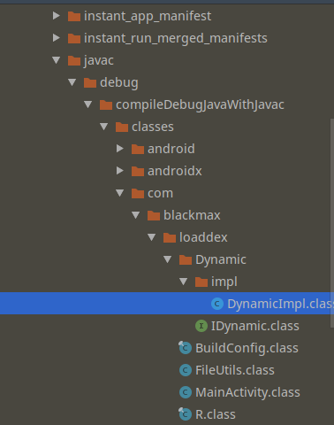

Dex动态加载
安卓上面加载dex已经不是啥新鲜事了，这边要测试一下之前说的Artist对于动态加载的dex能不能应用到。所以就自己写一个这样的例子，哎，虽然不难，还是踩了一些坑。
Java加载Dex
java加载dex相对简单一些，但缺点就是很容易看出来，毕竟java逆向要简单于c嘛。主要过程也是分为两个，第一个就是Dex的制作，第二个是加载Dex的App的编写。
Dex制作
这里要注意，dex中路径什么的很重要，不然会影响到后面加载，导致找不到类，我这里先贴上我的路径，后面在慢慢分析。

可以看到，我在Dynamic包下创建了一个IDynamic的接口，具体如下:
1 | package com.blackmax.loaddex.Dynamic; |
同时，包下还有一个impl包，用来具体实现这个接口:
1 | package com.blackmax.loaddex.Dynamic.impl; |
我们的目标是把这两个文件打包成dex，让正常的app加载这个dex并调用其中的TestDynamicCode()。接下来就要编译，直接用Build-Make Project就行了。编译完之后，在app/build路径下会产生编译好的class文件。这里要说明一下，我在网上查的很多都说在app/build/intermediates路径下，可能是因为版本之类的问题，我的编译出来的class文件在app/build/intermediates/javac/debug/compileDebugJavaWithJavac路径下，大家找不到就自己搜一下.class文件就知道了。

有了class文件，接下来一步就是打包成jar，这里用了别人的脚本，直接在app目录下的build.gradle添加一个打包任务就行了。记得要改路径。然后用右侧gradle任务栏找到makeJar任务执行就行了。不出意外在build/libs目录下就能找到打包好的dynamic.jar文件了。
1 | //删除dynamic.jar包任务 |
目前我们的还是jar包，还不是dex结构的包，接下来一步就是转换，好在这步Android SDK也提供了工具，直接用就完事了。在SDK中找到路径build-tools/xxx版本，比如这里我用的28.0.3，然后用dx脚本转换
./dx --dex --output=dynamic_dex.jar dynamic.jar
在目录下就能找到dynamic_dex.jar了，然后复制到assets路径下。
编写App
为了保证路径之类的命名问题，我直接就在这个工程上修改编写APP了。首先为了保证最后的app是加载我们的Dex中的代码，而不是把impl打包进app，先把impl包删了，只保留接口。
剩下的就是编写加载dex的逻辑了，要把dex拷贝到合适位置，再加载。文件处理那块参考的这里的代码，这里不贴全部的代码了，只看核心的几个调用
1 | // 创建DexClassLoader，第一个参数是dynamic_dex.jar的文件路径，第二个参数是要放dex的目录路径，第三个参数为空，第四个参数为getClassLoader() 可以用this. |
然后清除build下的缓存文件，最好缓存都清一遍，重新build，我遇到的就是这样一个坑爹的问题，最后打包之后一直找不到类，但是清除缓存之后再build就好了。。。我也不清楚什么原因，参照这里解决的
JNI加载Dex
这个今天再写。。还没开始做